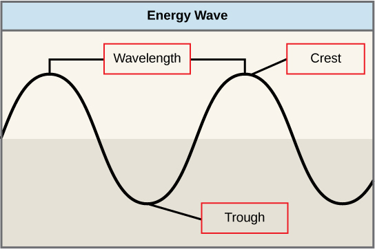
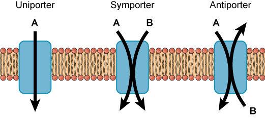
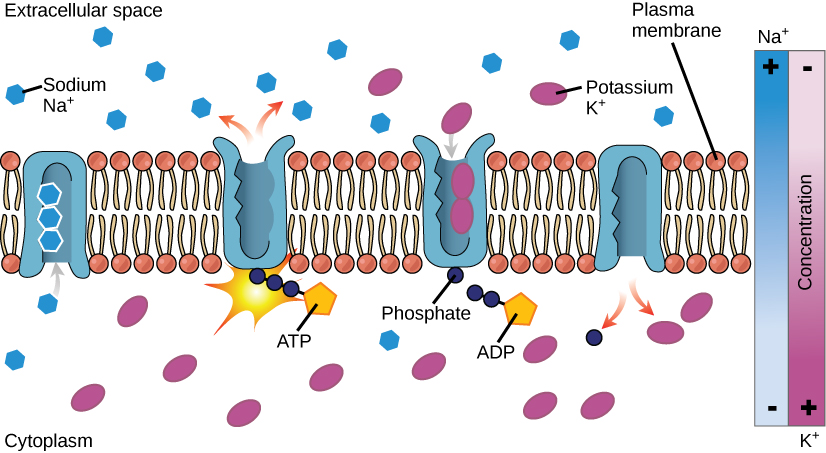

物质跨膜运输
一、生物膜的物质转运概述
物质跨膜运输（Membrane Transport）是细胞维持内环境稳态、摄取营养物质和排出代谢废物的基本生命活动。生物膜（质膜和细胞器膜）是选择性通透屏障，其脂双层核心对大多数极性分子和离子高度不通透。
物质跨膜运输的五大类方式：
- 简单扩散（Simple Diffusion）：小分子（O₂、CO₂、N₂、乙醇、尿素）沿浓度梯度直接穿过脂双层，不需要膜蛋白，不消耗能量。
- 协助扩散（Facilitated Diffusion）：通过通道蛋白或载体蛋白，顺浓度梯度（或电化学梯度），不消耗ATP。包括离子通道（ion channel）和载体介导的转运（如GLUT）。
- 主动运输（Active Transport）：逆浓度梯度，需要消耗能量（ATP或离子梯度）。分为初级主动运输（直接利用ATP，如P型泵、ABC超家族）和次级主动运输（利用离子梯度，如SGLT）。
- 协同运输（Cotransport）：一种物质的逆浓度梯度转运与另一种物质的顺浓度梯度转运相耦联。同向转运（symport）和反向转运（antiport）。
- 膜泡运输（Vesicular Transport）：大分子和颗粒物质通过膜泡出芽和融合进出细胞，包括胞吞（endocytosis）和胞吐（exocytosis）。
二、被动运输——简单扩散与协助扩散
简单扩散（Simple Diffusion）的速率取决于：
- 浓度梯度：Fick第一定律，J = -D(dc/dx)，扩散通量J与浓度梯度成正比。
- 脂溶性（疏水性）：Overton规则——分子的脂溶性越强（油水分配系数越大），透过脂双层的速率越快。O₂、CO₂、N₂、类固醇激素等脂溶性分子快速扩散；水分子虽为极性分子，但分子极小且具有一定脂溶性，可缓慢扩散。
- 分子大小：分子越小，扩散越快。
- 温度：温度升高，膜流动性增加，扩散加快。
协助扩散（Facilitated Diffusion）通过两类膜蛋白实现：
- 通道蛋白（Channel Protein）：形成跨膜亲水孔道，离子和水分子通过。具有离子选择性（如K⁺通道对K⁺的通透性比Na⁺高10000倍），多数为门控通道（电压门控、配体门控、机械门控）。转运速率极高（~10⁷-10⁸离子/秒），无饱和现象。
- 载体蛋白（Carrier Protein/Transporter）：与底物特异性结合，通过构象变化完成转运。转运速率较低（~10²-10⁴分子/秒），表现出饱和动力学（V_max和K_m），类似于酶动力学。经典例子：GLUT1（葡萄糖转运蛋白，12次跨膜α螺旋）。
通道蛋白详解：
- K⁺通道（KcsA）：四聚体，每个亚基2个跨膜螺旋。选择性过滤器（selectivity filter）由保守序列TVGYG形成，羧基氧原子精确排列以配位脱水K⁺（半径1.33Å），而Na⁺（半径0.95Å）太小无法被有效配位。这是" snug-fit"模型的经典范例。
- 水孔蛋白（Aquaporin, AQP）：四聚体，每个亚基形成独立水通道。Asn-Pro-Ala (NPA)基序在通道中心形成正电荷区域，排斥质子（H₃O⁺），允许水分子单列通过。AQP1在肾脏近曲小管和红细胞中高表达，AQP2在肾脏集合管受ADH调控。
- 电压门控Na⁺通道：由α亚基（4个同源结构域，每个6个跨膜段）和β亚基组成。S4段含正电荷残基（Arg/Lys），为电压感受器。动作电位上升支的基础。
- 间隙连接（Gap Junction）：由连接子（connexon，6个connexin亚基）形成，允许<1.2kDa的小分子通过，实现细胞间通讯。


三、主动运输——ATP驱动的离子泵
主动运输（Active Transport）是逆电化学梯度、消耗代谢能量的跨膜运输过程。根据能量来源和结构特征，可分为四大类ATP驱动泵：
- P型泵（P-type ATPase）：在催化循环中形成磷酸化天冬氨酸中间体（磷酸化中间体，故名P型）。被钒酸盐（vanadate，VO₄³⁻，磷酸类似物）抑制。包括Na⁺-K⁺-ATP酶、Ca²⁺-ATP酶（SERCA/PMCA）、H⁺-K⁺-ATP酶（胃质子泵）。
- V型泵（V-type ATPase）：不形成磷酸化中间体，利用ATP水解驱动H⁺转运，维持溶酶体、内体、液泡（Vacuole）的酸性环境（pH 4.5-5.0）。结构类似F型泵但功能相反（水解ATP泵H⁺）。
- F型泵（F-type ATPase）：即ATP合酶（ATP Synthase），正常情况下利用质子梯度合成ATP（而非水解ATP泵H⁺），但在某些细菌中可逆。位于线粒体内膜、类囊体膜、细菌质膜。
- ABC超家族（ABC Superfamily）：ATP-Binding Cassette转运蛋白，含两个跨膜结构域（TMD，各6个跨膜螺旋）和两个核苷酸结合结构域（NBD）。ATP水解驱动构象变化，实现底物转运。包括MDR1（P-糖蛋白）、CFTR、TAP等。
Na⁺-K⁺-ATP酶（Na⁺-K⁺ Pump）——P型泵的经典代表：
- 结构：α亚基（催化亚基，~110kDa，10次跨膜螺旋）+ β亚基（糖蛋白，辅助α折叠和膜定位）+ γ亚基（FXYD蛋白家族，调节泵活性）。功能单位为αβ异二聚体。
- 催化循环（Post-Albers循环）：E1状态（高Na⁺亲和力，面向胞质）→ 3Na⁺结合 → ATP结合 → 磷酸化（Asp369）→ E1~P→E2~P（构象转变，3Na⁺释放至胞外）→ 2K⁺结合（胞外侧）→ 去磷酸化 → E2(K⁺)₂→E1（K⁺释放至胞质）。每循环：3Na⁺出，2K⁺进，消耗1ATP。
- 抑制剂：乌本苷（ouabain，哇巴因）——强心苷，与K⁺竞争胞外侧结合位点；洋地黄（digitalis）类药物（地高辛）——治疗心力衰竭。
- 生理意义：维持细胞内高K⁺(~140mM)/低Na⁺(~12mM)和细胞外高Na⁺(~145mM)/低K⁺(~4mM)；维持细胞体积（Donnan平衡）；建立Na⁺梯度，驱动次级主动运输；维持膜电位（生电性，每次循环净输出1个正电荷，贡献约-4mV）。
- 能量消耗：占静息状态细胞总ATP消耗的~25%（神经细胞可达~70%）。
Ca²⁺-ATP酶——P型泵的另一重要成员：
- SERCA（肌质网/内质网Ca²⁺-ATP酶）：位于肌质网（SR）膜，将Ca²⁺从胞质泵入SR腔。每水解1ATP转运2Ca²⁺。受磷蛋白（phospholamban, PLB）调节——去磷酸化PLB抑制SERCA，PKA磷酸化PLB→解除抑制→Ca²⁺回收加速→肌肉舒张。被毒胡萝卜素（thapsigargin）不可逆抑制。
- PMCA（质膜Ca²⁺-ATP酶）：位于质膜，将Ca²⁺排出细胞。每水解1ATP转运1Ca²⁺。受钙调蛋白（calmodulin）激活——Ca²⁺-CaM复合物结合PMCA→激活。
- 细胞内Ca²⁺浓度极低（~100nM静息），胞外/ER腔Ca²⁺浓度~1-2mM，形成巨大化学梯度。Ca²⁺是重要的第二信使。
ABC超家族转运蛋白：
- 结构：核心结构为2个TMD（跨膜结构域）+ 2个NBD（核苷酸结合结构域）。NBD含Walker A（GXXGXGKS/T）、Walker B（hhhhD，h为疏水残基）和LSGGQ特征序列（ABC signature motif）。
- MDR1/P-糖蛋白（ABCB1）：在肿瘤细胞中过表达，将多种疏水性化疗药物（紫杉醇、阿霉素、长春碱等）泵出细胞，导致多药耐药（MDR）。底物广泛、结构各异，是药物外排的"广义泵"。
- CFTR（囊性纤维化跨膜传导调节因子，ABCC7）：Cl⁻通道，受PKA磷酸化调控。ΔF508突变（缺失Phe508）导致CFTR错误折叠、无法到达质膜，是囊性纤维化（白种人最常见的遗传病之一）的病因。
- TAP（抗原加工相关转运蛋白，ABCB2/ABCB3）：将蛋白酶体降解产生的肽段从胞质转运入内质网腔，与MHC I类分子结合，参与抗原提呈。
- 磺酰脲受体（SUR1，ABCC8）：与Kir6.2钾通道共同构成ATP敏感性K⁺通道（K_ATP），调节胰岛素分泌。

四、四类泵综合对比
| 特征 | P型泵 | V型泵 | F型泵 | ABC超家族 |
|---|---|---|---|---|
| 磷酸化中间体 | 有（Asp-P） | 无 | 无 | 无 |
| 能量来源 | ATP水解 | ATP水解 | 质子梯度→ATP合成 | ATP水解 |
| 运输离子/底物 | Na⁺,K⁺,Ca²⁺,H⁺ | H⁺ | H⁺（合成ATP） | 多种（药物、肽、脂质等） |
| 抑制剂 | 钒酸盐、乌本苷 | bafilomycin A1 | 寡霉素 | verapamil（MDR抑制） |
| 典型代表 | Na⁺-K⁺-ATP酶、SERCA | 溶酶体V-ATPase | 线粒体ATP合酶 | MDR1、CFTR、TAP |
| 定位 | 质膜、SR/ER膜 | 溶酶体、内体、液泡膜 | 线粒体内膜、类囊体膜 | 质膜、ER膜 |
| 结构特征 | αβ异二聚体 | 多亚基（V₁+V₀） | F₁催化头+F₀质子通道 | 2TMD+2NBD |
| 生理功能 | 维持离子梯度 | 酸化细胞器 | 氧化磷酸化/光合磷酸化 | 外排/转运 |
五、协同运输（次级主动运输）
协同运输（Cotransport）利用一种溶质的电化学梯度（通常由Na⁺-K⁺泵建立的Na⁺梯度）驱动另一种溶质的逆浓度梯度转运，不直接消耗ATP，属于次级主动运输。
- 同向转运（Symport）：两种溶质同方向跨膜。经典例子：SGLT1（钠-葡萄糖同向转运蛋白）——小肠上皮细胞和肾近曲小管中，利用Na⁺梯度将葡萄糖逆浓度梯度转运入细胞（2Na⁺:1Glucose）。SGLT2在肾近曲小管负责大部分葡萄糖重吸收（1Na⁺:1Glucose）。SGLT2抑制剂（达格列净、恩格列净）是新型降糖药。
- 反向转运（Antiport）：两种溶质相反方向跨膜。经典例子：NCX（Na⁺-Ca²⁺交换体）——利用Na⁺内流驱动Ca²⁺外排（3Na⁺:1Ca²⁺），是心肌细胞舒张期排出Ca²⁺的主要机制。NHE（Na⁺-H⁺交换体，1Na⁺:1H⁺）调节细胞内pH。
- 协同运输的能量计算：对于Na⁺-葡萄糖同向转运，Na⁺的电化学势Δμ_Na⁺ = RTln([Na⁺]_out/[Na⁺]_in) + zFΔψ，足够驱动葡萄糖逆浓度梯度转运（可达~10⁴倍浓度差）。
六、膜泡运输——胞吞与胞吐
胞吞作用（Endocytosis）：质膜内陷包裹细胞外物质形成囊泡进入细胞。分类：
- 吞噬作用（Phagocytosis）：吞噬大颗粒（>0.5μm），如细菌、细胞碎片。由巨噬细胞、中性粒细胞等专职吞噬细胞执行。需要肌动蛋白聚合推动伪足形成。受体介导（Fc受体识别抗体标记的病原体，补体受体CR3）。
- 胞饮作用（Pinocytosis）：非特异性摄取液体和其中的小分子。质膜内陷形成小囊泡（~100nm）。
- 受体介导的胞吞（Receptor-Mediated Endocytosis, RME）：配体与质膜受体结合→聚集在有被小窝（coated pit）→网格蛋白（clathrin）包被的囊泡内陷→脱包被→与早期内体融合。经典例子：LDL受体介导的胆固醇摄取（LDLR突变→家族性高胆固醇血症）；转铁蛋白受体介导的铁摄取。
胞吐作用（Exocytosis）：细胞内囊泡与质膜融合，将内容物释放到胞外。分为：
- 组成型胞吐：持续进行，如质膜脂质和蛋白质的补充、细胞外基质蛋白的分泌。
- 调节型胞吐：受信号触发，如神经递质释放（Ca²⁺触发SNARE蛋白介导的囊泡融合）、胰岛素分泌、肥大细胞释放组胺。
SNARE蛋白介导胞吐中囊泡与靶膜的融合：v-SNARE（囊泡侧，如synaptobrevin/VAMP）与t-SNARE（靶膜侧，如syntaxin和SNAP-25）形成四螺旋束，拉近两膜，促进融合。肉毒杆菌毒素（BoNT）和破伤风毒素（TeNT）是锌蛋白酶，切割SNARE蛋白，阻断神经递质释放。
跨膜运输的动力学特征比较：
- 简单扩散：速率与浓度差成正比（线性关系），无饱和，无最大速率。
- 载体介导的协助扩散：符合米氏方程（Michaelis-Menten），V = V_max[S]/(K_m+[S])，有饱和现象，V_max取决于载体蛋白数量。
- 通道介导的协助扩散：速率极高（接近扩散极限），无饱和（或仅在高浓度时有微弱饱和），但受门控调节。
- 主动运输：逆浓度梯度，可建立和维持浓度梯度，表现饱和动力学。
跨膜运输的抑制剂实验是区分运输方式的关键手段：①缺氧/氰化物抑制→主动运输减少→证明其依赖ATP；②乌本苷抑制Na⁺-K⁺泵→Na⁺梯度消失→协同运输停止→证明次级主动运输依赖于Na⁺梯度；③竞争性抑制剂（如根皮苷抑制SGLT）→协助扩散或主动运输减少。
七、本节核心总结
六、跨膜运输的动力学与实验方法
跨膜运输的动力学分析是区分不同运输方式的重要手段：
- 简单扩散：速率与浓度梯度成正比（线性关系），无饱和现象，无最大速率。温度系数Q₁₀≈1.2-1.5（扩散过程受温度影响较小）。
- 载体介导的协助扩散：符合米氏方程（Michaelis-Menten动力学），V=V_max[S]/(K_m+[S])。V_max反映载体蛋白数量，K_m反映载体对底物的亲和力。转运速率可达V_max的饱和值。温度系数Q₁₀≈2-3（构象变化需要热能）。
- 主动运输：同样表现饱和动力学，但可逆浓度梯度建立和维持浓度梯度。耗能抑制剂（如CN⁻、NaN₃）可抑制。
区分运输方式的经典实验：
- 根皮苷（phlorizin）：SGLT的竞争性抑制剂。K_m增大，V_max不变→证明是载体介导的协助扩散或主动运输。
- 缺氧/代谢抑制剂（CN⁻/NaN₃/DNP）：抑制主动运输但不抑制协助扩散。如果转运被抑制→主动运输。
- 乌本苷（ouabain）：特异性抑制Na⁺-K⁺-ATP酶→Na⁺梯度消失→次级主动运输停止。证明协同运输依赖Na⁺梯度。
- 膜片钳技术（Patch Clamp）：Neher和Sakmann 1976年发明（获1991年诺贝尔奖），可直接记录单个离子通道的电流活动。细胞贴附式（cell-attached）、内面向外式（inside-out）、外面向外式（outside-out）、全细胞式（whole-cell）四种构型。
六、膜泡运输与细胞内外物质交换
胞吞作用（Endocytosis）的详细分类：
- 吞噬作用（Phagocytosis）：吞噬细胞（巨噬细胞、中性粒细胞、树突状细胞）通过伪足延伸包裹大颗粒（>0.5um，如细菌、细胞碎片）。受体介导——Fc受体识别抗体调理的病原体，CR3受体识别补体调理的病原体。吞噬体与溶酶体融合→形成吞噬溶酶体→降解。是先天免疫的重要机制。
- 胞饮作用（Pinocytosis）：细胞摄取细胞外液和溶解物质。不依赖受体，形成小囊泡（<0.2um）。
- 受体介导的胞吞（Receptor-Mediated Endocytosis, RME）：配体与细胞表面受体特异性结合→聚集于有被小窝（coated pit）→有被小泡（coated vesicle）内陷→脱被→形成早期内体（early endosome）→晚期内体（late endosome）→溶酶体。关键分子：网格蛋白（clathrin）（三脚蛋白复合体/triskelion形成多面体笼）、衔接蛋白AP2（连接受体胞质尾和网格蛋白）、发动蛋白（dynamin，GTPase，在囊泡颈部形成螺旋聚合物→GTP水解→切断囊泡）。
经典RME例子——LDL受体途径：LDL（低密度脂蛋白）与LDL受体结合→有被小窝内化→内体（酸性pH→LDL与受体解离）→受体循环回质膜（~10分钟循环一次）→LDL被运至溶酶体→胆固醇酯水解→游离胆固醇释放。Brown & Goldstein发现LDL受体途径获1985年诺贝尔奖。LDL受体基因突变→家族性高胆固醇血症（FH）。
胞吐作用（Exocytosis）的两种类型：
- 组成型胞吐（Constitutive Exocytosis）：持续进行，不依赖信号。所有细胞均有，将新合成的膜蛋白、脂质和细胞外基质蛋白运输到质膜。高尔基体→分泌囊泡→质膜融合。
- 调节型胞吐（Regulated Exocytosis）：仅在特定信号刺激下触发。分泌囊泡在质膜下积累→Ca²⁺信号→囊泡与质膜融合→内容物释放。典型例子：神经递质释放（突触囊泡，synaptotagmin为Ca²⁺传感器，SNARE蛋白介导膜融合）、胰岛素分泌（β细胞，葡萄糖→ATP→K_ATP关闭→去极化→VGCC开放→Ca²⁺内流→胰岛素颗粒胞吐）、肥大细胞组胺释放（过敏反应）。
SNARE蛋白家族介导胞吐的膜融合：v-SNARE（囊泡膜上，如synaptobrevin/VAMP）与t-SNARE（靶膜上，如syntaxin和SNAP-25）形成四股螺旋束（SNARE complex）→拉近两膜→融合。破伤风毒素和肉毒杆菌毒素（BoNT）特异性切割SNARE蛋白→阻断神经递质释放→麻痹。
必背考点汇总
- 五种运输方式：简单扩散、协助扩散（通道/载体）、主动运输（初级/次级）、协同运输（同向/反向）、膜泡运输（胞吞/胞吐）
- P型泵：Na⁺-K⁺-ATP酶（3Na⁺出/2K⁺进/1ATP，Post-Albers循环，乌本苷抑制），SERCA（2Ca²⁺/ATP，毒胡萝卜素抑制），PMCA（1Ca²⁺/ATP，CaM激活）
- V型泵：维持溶酶体pH 4.5-5.0，bafilomycin A1抑制
- F型泵：ATP合酶，利用质子梯度合成ATP，寡霉素抑制
- ABC超家族：2TMD+2NBD，MDR1（多药耐药），CFTR（ΔF508→囊性纤维化），TAP（抗原提呈）
- 协同运输：SGLT（同向，2Na⁺:1Glucose），NCX（反向，3Na⁺:1Ca²⁺）
- RME：LDL受体→网格蛋白→有被小窝→内体→溶酶体
- SNARE蛋白：v-SNARE/t-SNARE，四螺旋束，肉毒杆菌毒素切割
- K⁺通道选择性：TVGYG序列，snug-fit模型
- 水孔蛋白：NPA基序，排斥质子
高中教材衔接 · 课标对应
【课标对应内容】人教版必修1第3章"细胞膜的结构和功能"——流动镶嵌模型、被动运输（自由扩散、协助扩散）、主动运输的基本概念；人教版选择性必修1第1章"人体的内环境与稳态"——渗透作用、协助扩散（葡萄糖进入红细胞）、主动运输（钠钾泵维持静息电位）。具体到小节：必修1第3章第1节"细胞膜的结构和功能"、第3章第2节"被动运输"、第3章第3节"主动运输"；选择性必修1第1章第1节"细胞生活的环境"——渗透压、水分进出细胞；第1章第3节"物质跨膜运输的方式"——钠钾泵与静息电位的维持。
2025 / 2026 联赛 · 初赛真题链接
本章重难点深度解析
重难点 1：被动运输 vs 主动运输的能量学
- 被动运输（顺电化学梯度）：自由扩散（小分子非极性：O2、CO2、类固醇激素、NH3——直接穿过磷脂双分子层，速率正比于膜面积和浓度差，Fick定律）；协助扩散（极性大分子和离子：葡萄糖、氨基酸、离子——需要通道或载体，速率饱和、有竞争性抑制）。
- 主动运输（逆电化学梯度）：必须耦合能量来源——①ATP水解（P型/V型/ABC泵）；②电化学梯度（协同运输，建立在Na+或H+梯度之上）；③光能（视紫红质 bacteriorhodopsin，仅在嗜盐古菌中）。
- 热力学判据：跨膜转运的吉布斯自由能变化 ΔG = RT·ln([S]i/[S]o) + zF·ΔΨ（电化学势差）。ΔG < 0 自发（被动），ΔG > 0 非自发（需要能量输入，主动）。
- 载体与通道的本质差异：载体（carrier/porter）通过构象变化交替暴露底物结合位点（如同门型闸门），转运速率慢（10²-10⁴ 离子/秒），可饱和；通道（channel）形成跨膜孔道（β桶或α螺旋束），转运速率极快（10⁶-10⁸ 离子/秒），门控控制开闭（电压门控、配体门控、机械门控）。
重难点 2：Na+-K+-ATPase 的 Post-Albers 循环机制
- 结构基础：α催化亚基（10个跨膜α螺旋，胞内有ATP结合域、磷酸化位点Asp369、K+结合位点）+ β糖蛋白亚基（1个跨膜α螺旋，辅助α折叠和质膜定位）+ γ调节亚基（FXYD蛋白家族，多种同源体：FXYD2=γ亚基）。最小功能单位为αβ异二聚体，全酶可能是(αβ)₂或(αβ)₄。
- 催化循环（E1↔E2构象转换）：
①E1状态（Na+高亲和力，开放向胞质）→ 3个Na+结合于胞质侧；
②ATP结合于α亚基N结构域，Mg2+催化γ-磷酸转移至Asp369，形成E1~P（高能磷酸化）；
③构象转变E1~P→E2~P，Na+亲和力下降，3Na+释放到胞外；
④2K+从胞外侧结合E2~P（高K+亲和力）；
⑤去磷酸化（E2~P→E2），构象转变E2→E1，2K+释放到胞质；
⑥完成一个循环，净转运3Na+出、2K+进，消耗1ATP。 - 计量学：每次循环净外排1个正电荷 → 产生约-4mV的膜电位贡献（占总静息电位-70mV的小部分，但电化学梯度的主要建立者）。
- 抑制剂：乌本苷（ouabain，哇巴因，强心苷类，与K+竞争胞外结合位点）；洋地黄（digitalis）/地高辛（digoxin，治疗心衰的机制就是轻度抑制心肌细胞Na+/K+-ATPase → 胞内Na+升高 → NCX反向转运将Na+出、Ca2+进 → 胞内Ca2+升高 → 心肌收缩力增强）。
重难点 3：协同运输（次级主动运输）的能量学
- 定义：利用一种离子（Na+或H+）的电化学梯度作为能量来源，驱动另一种溶质逆浓度梯度转运。本质是"能量的间接使用"——原级泵（Na+/K+-ATPase）水解ATP建立Na+梯度，协同转运蛋白利用此梯度驱动其他底物。
- 同向转运（symport）：底物和离子同方向转运。SGLT1（小肠上皮细胞）：2Na+:1葡萄糖 同向；SGLT2（肾近端小管）：1Na+:1葡萄糖。氨基酸转运子：Na+依赖性中性氨基酸转运子（N-system、L-system等）。
- 反向转运（antiport）：底物和离子反方向转运。NCX（Na+/Ca2+ exchanger）：3Na+入 : 1Ca2+出（心肌细胞正常工作时）；反向时（Na+/K+-ATPase被地高辛抑制）：3Na+出 : 1Ca2+入。NHE（Na+/H+ exchanger）：1Na+入 : 1H+出，调节胞内pH。
- 能量计算实例：小肠上皮细胞顶端（肠腔侧）：SGLT1利用Na+梯度（胞外~145mM vs 胞内~12mM，~-10倍浓度差）将葡萄糖从肠腔（~0.1mM）逆浓度运入细胞（最终可达~1mM）。基底侧：GLUT2协助扩散将葡萄糖顺浓度梯度运出到血液。整体来看，葡萄糖的"主动吸收"是间接耗能的（顶端SGLT1次级主动 + 整个过程中Na+/K+-ATPase持续工作维持Na+梯度）。
重难点 4：膜泡运输（胞吞/胞吐）的分子机制
- 胞吞（endocytosis）：
①吞噬（phagocytosis）——大颗粒（>0.5 μm），伪足包裹，专业吞噬细胞（巨噬细胞、中性粒细胞）；
②胞饮（pinocytosis）——小液滴，非特异，组成型；
③受体介导的胞吞（RME）——有被小窝（clathrin-coated pits）→ 有被小泡 → 脱壳 → 内体（endosome）→ 早期内体（pH 6.0-6.5）→ 晚期内体（pH 5.0-6.0）→ 溶酶体（pH 4.5-5.0）。LDL受体、胰岛素受体、转铁蛋白受体均通过RME。 - 胞吐（exocytosis）：
①组成型胞吐（constitutive）——所有细胞均有，持续提供膜蛋白和分泌蛋白到质膜；
②调节型胞吐（regulated）——仅分泌细胞（神经、内分泌、肥大细胞），需要外部信号（Ca2+）触发，分泌颗粒与质膜融合释放内容物。 - SNARE蛋白与膜融合：v-SNARE（位于小泡膜，VAMP/synaptobrevin）+ t-SNARE（位于靶膜，syntaxin+SNAP-25）形成四股螺旋束（coiled-coil），拉近两层脂质双分子层，启动膜融合。NSF（+SNAP）利用ATP水解拆解SNARE复合物，使其循环使用。
- 神经毒素的分子机制：肉毒杆菌毒素（BoNT A-G）和破伤风毒素（TeNT）都是锌依赖性蛋白酶，靶向切割SNARE蛋白：BoNT/A切割SNAP-25；BoNT/B切割VAMP；TeNT切割VAMP，抑制神经递质释放。临床应用：BoNT/A = 肉毒素（BOTOX），治疗肌张力障碍、斜视、化妆品除皱。
重难点 5：通道蛋白的选择性与门控
- K+通道的选择性过滤器：KcsA通道（Streptomyces lividans）由4个相同亚基围成中央孔，每个亚基贡献一个TVGYG（Thr-Val-Gly-Tyr-Gly）签名序列环（signature sequence loop）。K+脱水后与8个羰基氧配位（来自主链），精确匹配K+的离子半径（1.33 Å）。Na+（0.95 Å）太小，脱水能损失无法补偿。Snug-fit模型解释了K+/Na+ 1000:1的选择性。
- 门控机制：
①电压门控（voltage-gated）——S4跨膜螺旋含正电荷残基（Arg/Lys），膜电位变化驱动其移动，开启/关闭通道（Nav、Kv、Cav通道）；
②配体门控（ligand-gated）——配体结合引起构象变化（离子通道型受体：nAChR、GABAa受体、谷氨酸受体）；
③机械门控（mechanically-gated）——膜张力直接打开（内耳毛细胞、机械感受器）；
④第二信使门控（second messenger-gated）——cAMP、cGMP、Ca2+激活（CNG通道、IP3受体、ryanodine受体）。 - 水通道蛋白（AQP）：6个跨膜α螺旋 + 2个短的半跨膜螺旋（每个含NPA基序）形成"沙漏"结构，孔道最窄处~2.8 Å允许水分子单列通过。Asn-Pro-Ala（NPA）基序的Asn侧链酰胺N-H与水分子形成氢键，并排斥质子（H3O+）通过（因为质子转运需要氢键网络的瞬时重组）。AQP1（红细胞肾集合管）、AQP2（集合管主细胞，受ADH调节）参与水重吸收。